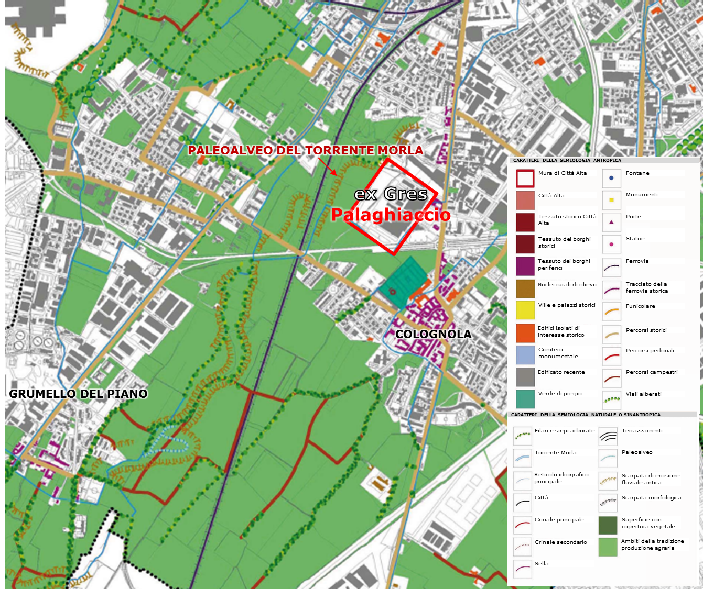

| Il paleoalveo del torrente Morla |
|  Il paleoalveo del torrente Morla, che anticamente scorreva nell'area adiacente all'ex-Gres (PGT Tavola SP2 – Semiologia antropica e naturale – dettaglio) |
Oltre alla presenza della roggia, l’area dell’ex-Gres si caratterizza anche per l’esistenza del paleoalveo del torrente Morla, che scorreva a ovest dell’insediamento industriale, nella zona verde attualmente inutilizzata, continuando poi verso Grumello del Piano nell’odierno PLIS Parco Agricolo Ecologico. Attualmente l’alveo attivo del torrente Morla scorre in tutt’altra direzione, delimitando il territorio comunale di Bergamo ad est e lambendo il Corpo Santo di Campagnola a sud. Il paleoalveo è una testimonianza molto antica risalente al XIII secolo quando il torrente, raggiunta la città di Bergamo a est e dopo aver fatto un’ampia curva che la evitava proseguiva verso la zona dell’ex-Gres e successivamente in direzione di Grumello del Piano, disperdendosi infine in una zona acquitrinosa con altri corsi d'acqua provenienti dalle pendici collinari occidentali. Tale percorso venne modificato nel Duecento, quando il torrente venne deviato per irrigare dei nuovi campi bonificati. Il Municipio di Bergamo nel 1253 alienò parte dei suoi terreni a sud di Campagnola e li affidò a ricche famiglie aristocratiche (tra cui i Suardi e i Grumelli) che li gestirono e li coltivarono destinando la produzione di fieno e ortaglie alla città. Le tracce di tale operazione permangono oggi nei designatori, con la presenza della via dei Prati, a Campagnola, che corre ancora oggi lungo la roggia. Successivamente lo stesso schema della bonifica venne applicato per la fondazione del centro di Comun Nuovo, situato qualche km a sud di Colognola in direzione di Caravaggio. Tracce ben visibili dell’antico corso del torrente Morla si possono riconoscere nell’area compresa tra la ferrovia e l’area dell’ex-Gres, e immediatamente a sud dell'asse interurbano ad ovest della ferrovia. Tale tracciato è ampio fino a qualche decina di metri, delimitato da due principali scarpate e da una serie di scarpate secondarie che segnano l'area di influenza del torrente durante gli episodi di esondazione il cui risultato è una altimetria variabile. Ad esempio nel tratto a nord dell’abitato di Grumello del Piano, ma anche nella zona adiacente l’ex-Gres, il Morla possedeva un alveo delimitato a sinistra da una scarpata di 2,50 metri, mentre sul lato destro, dove esondava i terrazzamenti misurano circa un metro di livello. Fino agli anni Ottanta del secolo scorso i tratti del paleoalveo venivano sfruttati, sia per la natura limosa dei terreni che per la loro pendenza costante, per realizzare le marcite, tipico sistema di coltivazione lombardo, costituito da prati stabili irrigati con un velo continuo d'acqua perché seguitino a vegetare per permettere tagli d'erba, anche fino a 8-10 nella stagione fredda (Galizzi, 2012). Oggi il disegno dei pochi campi agricoli ancora esistenti mostra, seppur parzialmente, tale interessante morfologia che andrebbe conservata e sottolineata con interventi in grado di mostrare la ricca stratificazione storica. |